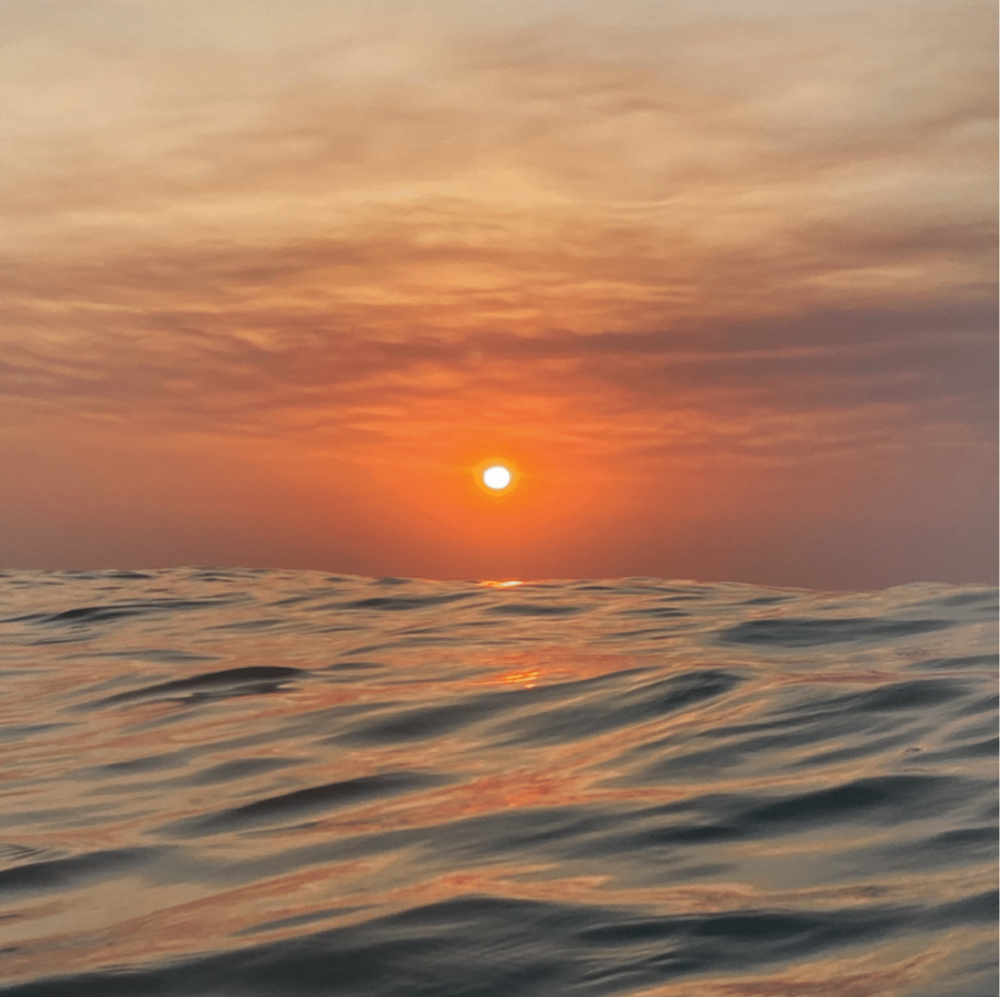
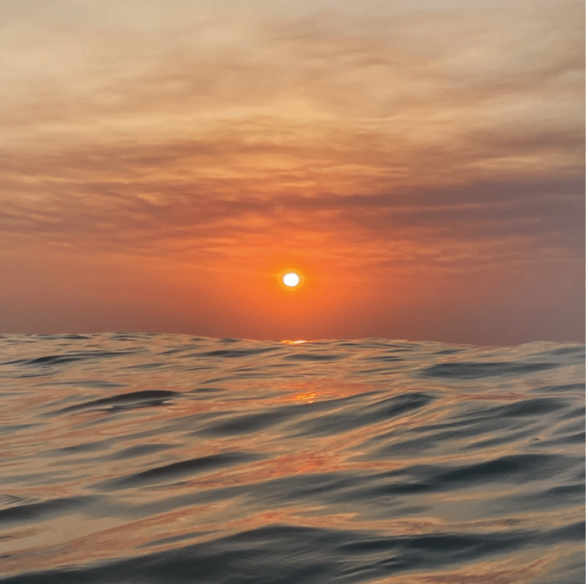

Portfolio
Iris Simone Baltus
2025
Visual Designer - Frontend Developer - UX/UI-Designer
Fotografie
Fotografie is een van mijn grootste passies. Met een scherp oog voor detail en een liefde voor de schoonheid in het alledaagse breng ik beelden tot leven. Mijn camerarol fungeert als een visueel dagboek, gevuld met momenten en details die mij inspireren. Deze beelden deel ik graag via Instagram, in de hoop andere te motiveren en inspireren om bewuster te kijken en de schoonheid in kleine dingen te waarderen. Ook wel benoemd als 'The art of noticing' - het ontdekken van bijzondere details in het gewone.
Dagelijks maak ik foto's en video's met mijn telefoon, waar ik ook ben, ik ben altijd opzoek naar de kleine details. Mijn blik op het leven kan ik ook wel omschrijven als zoekend naar een klein kader binnen het grote geheel.
Dit leg ik voornamelijk vast doormiddel van fotografie, maar recent ben ik ook begonnen met videografie, waarin beelden nog meer tot leven komen. Naast dat ik dagelijks beelden schiet op mijn telefoon, heb ik ook geïnvesteerd in een camera. Momenteel zit ik in een leerproces waarin ik me verdiep in de technieken en mogelijkheden van mijn camera, zodat ik mijn passie naar een hoger niveau kan tillen.
Up side down
Up side up
Het unieke design van de Melkweg en het door hen ontworpen font spraken mij enorm aan en vormden de inspiratie voor dit project. Mijn doel was om mijn technische vaardigheden te verbeteren en meer ervaring op te doen met webontwikkeling.
Het creëren van de animaties bleek een uitdagend maar leerzaam proces, waarin ik mijn technische kennis in HTML en CSS aanzienlijk heb verbreed.
Dit project combineerde mijn interesse in design en code en leverde niet alleen een waardevol leerproces op, maar ook een werk waar ik trots op ben.
Menu design
Geinspireerd op Wim Crouwel
Voor deze opdracht kreeg ik de taak om een one-pager te ontwerpen voor een cocktailmenu, geïnspireerd op het werk van Wim Crouwel.
Wim Crouwel is bekend om zijn gebruik van strakke grids, het ontwerpen van unieke fonts, het creëren van sterke contrasten en zijn minimalistische kleurgebruik, vaak beperkt tot twee à drie kleuren per ontwerp.
Na grondig onderzoek naar zijn stijl, ben ik begonnen met het ontwerpen van een font voor de titel, volledig gebaseerd op een grid. Vanuit ditzelfde grid heb ik ook iconen ontwikkeld die naadloos aansluiten bij de stijl van Crouwel. Na meerdere iteraties heb ik ervoor gekozen om niet alleen binnen een grid te ontwerpen, maar het grid ook expliciet zichtbaar te maken in het ontwerp door de verticale lijnen als element te behouden.
Samen met drie medestudenten heb ik een expositie gecreëerd die de cyclus van de vrouw op een visueel en toegankelijk manier presenteert. De expositie bestaat uit 28 foto's van de zee, waarbij elke foto een dag in de cyclus symboliseert. Elke afbeelding weerspiegelt hoe een vrouw zich op die dag kan voelen, aangevuld met een bijpassende quote die meer inzicht biedt in de emotionele of fysieke ervaring van die specifieke dag.
Om de cyclus begrijpelijk te maken voor iedereen, hebben we deze opgedeeld in vier seizoenen, waarbij elk seizoen een fase van de cyclus vertegenwoordigt. Aan elk seizoen hebben we een uitgebreide toelichting toegevoegd om de complexiteit en de dynamiek van de cyclus verder te verduidelijken.
Dit project bood mij niet alleen de kans om me inhoudelijk te verdiepen in dit onderwerp, maar ook om mijn eigen cyclus beter te begrijpen. De expositie werd tentoongesteld op de Hogeschool van Amsterdam, waar de reacties van bezoekers diepe indruk op mij maakten. Vrouwen voelden zich emotioneel geraakt door de herkenning van hun eigen ervaringen, terwijl mannen meer begrip toonden door de inzichten die ze die middag opdeden.
Deze expositie was volledig gericht op het creëren van herkenning en erkenning voor de cyclus van de vrouw, met respect voor de unieke manier waarop iedereen deze beleeft. Wij hebben de cyclus van een medestudent bijgehouden en daar een persona omheen ontwikkeld, die de nuances van de cyclus verder illustreerde.
 


Mode en feminisme
Deze door mij vormgegeven en ontwikkelde website verkent de invloed van feminisme op mode. Ik bespreek de verschillende golven van feminisme en belicht invloedrijke figuren zoals Gabrielle Chanel en Yves Saint Laurent, die gendernormen doorbraken en daarmee de modewereld transformeerden. Daarnaast geef ik aandacht aan iconen zoals Julia Roberts en Florence Pugh, die met hun gedurfde modekeuzes krachtige gender-buigende statements maakten.
Deze website ben ik niet alleen gestart vanwege mijn interesse in dit onderwerp, maar ook om mijn technische vaardigheden verder te ontwikkelen. Hoewel ik al enige ervaring had met HTML en CSS, lag de focus van dit project op het verkennen en toepassen van JavaScript.
Over mij
Ik ben een tweedejaars student Communicatie en Multimedia Design met een grote passie voor creativiteit. Of het nu gaat om mode, fotografie, videografie of design. Met mijn gevoel voor detail en oog voor schoonheid in het alledaagse breng ik verhalen en ideeën tot leven. De wereld van code ontdekte ik wat later, maar inmiddels voelt het bouwen van websites als een nieuwe creatieve taal waarin ik steeds meer mijn weg vind.